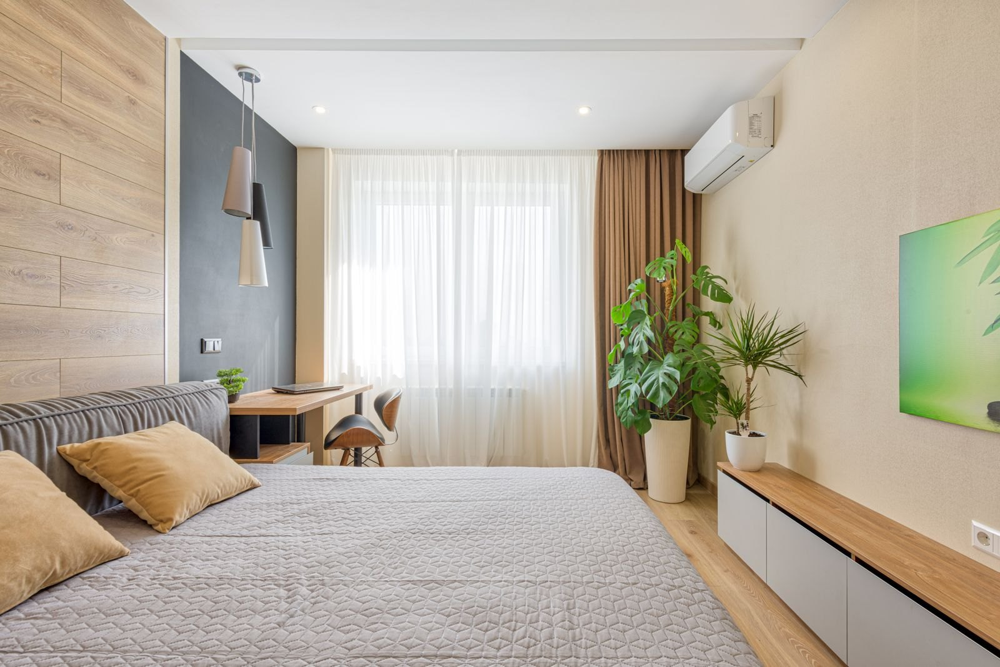
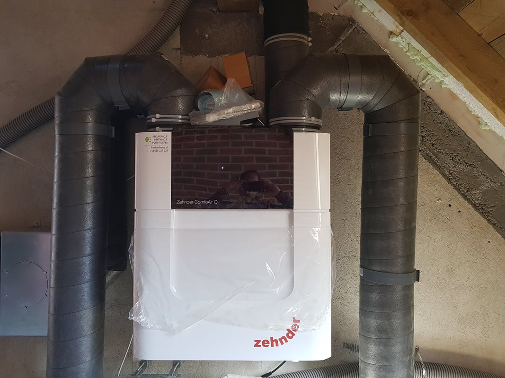
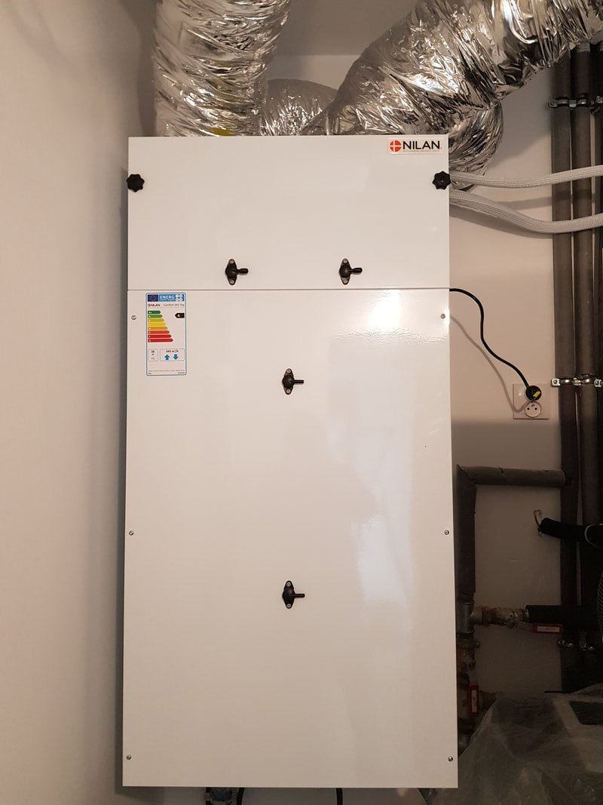
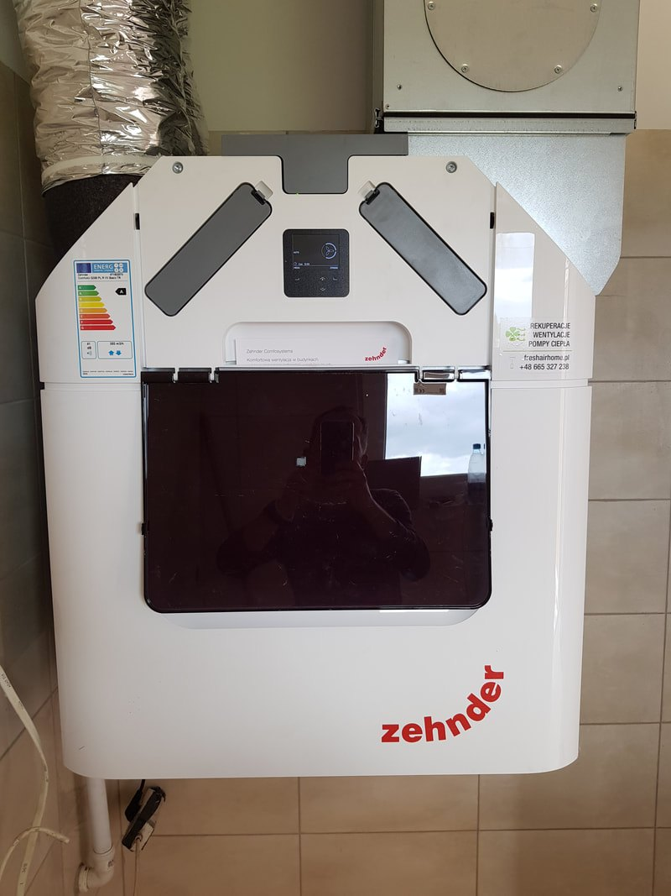
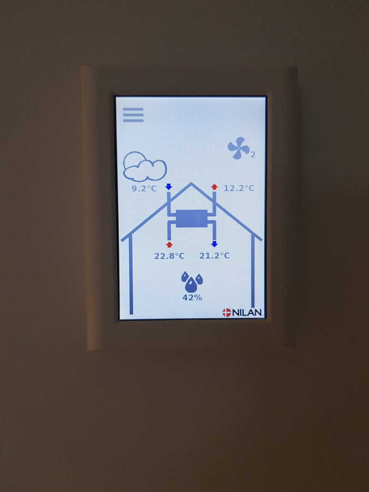
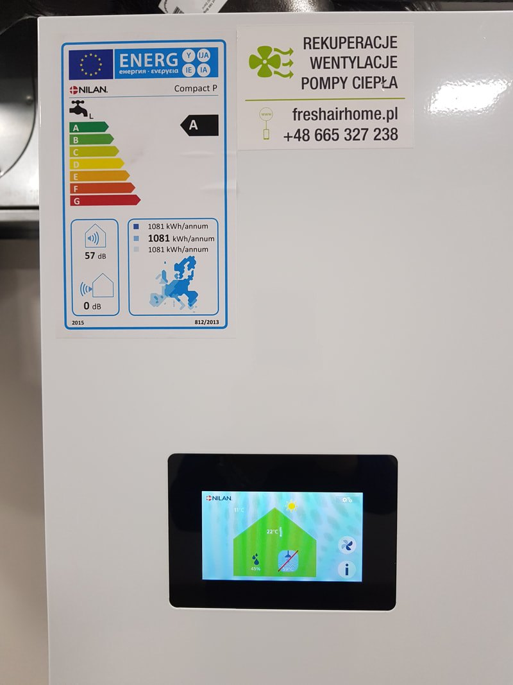
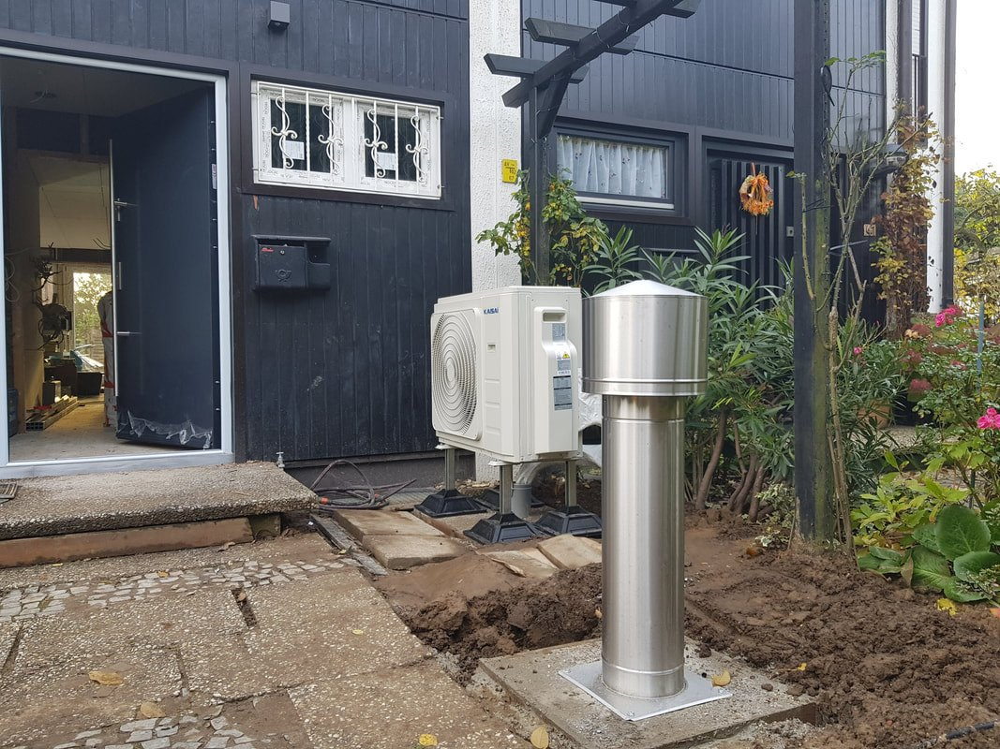
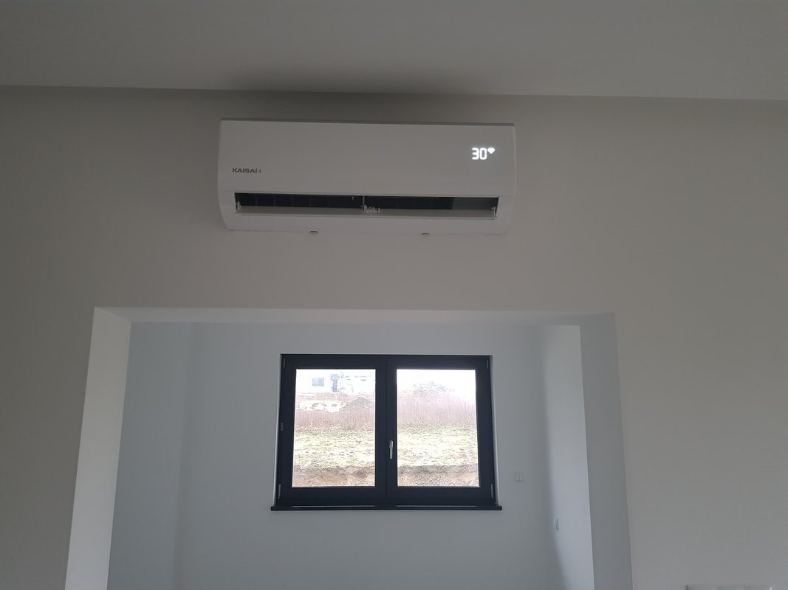

Świeże powietrze w każdym pomieszczeniu przez okrągły rok, ciepło zostaje w domu, filtry zatrzymują kurz i pyłki. Robimy całość: projekt, montaż, uruchomienie i serwis.

To wentylacja mechaniczna nawiewno-wywiewna z centralą, która odzyskuje ciepło. Wentylator wyrzuca zużyte powietrze z kuchni, łazienek i pralni, a w tym samym czasie wtłacza świeże do pokoi i sypialni. Oba strumienie przechodzą przez wymiennik i wymieniają się ciepłem, ale nie mieszają się ze sobą.
W szczelnym, nowym domu to jedyny sposób, żeby powietrze wymieniało się stale, bez wychładzania pomieszczeń. Wentylacja grawitacyjna działa tylko wtedy, gdy jest różnica temperatur, a jej skuteczność zależy od pogody.
Chcesz od razu wiedzieć, jakiej wydajności potrzebuje Twój dom? Policz to w konfiguratorze, zajmuje kilkanaście sekund.
Centrala ma pracować cicho, mieścić się tam, gdzie jest na nią miejsce, i dawać wymaganą ilość powietrza bez pracy na maksymalnych obrotach.
Liczymy strumień powietrza z kubatury oraz liczby łazienek, kuchni i sypialni. Z tego wychodzi wymagana wydajność centrali, a nie z katalogowego hasła „dom do 200 m2”.
Kotłownia, garaż, poddasze albo pomieszczenie techniczne. Sprawdzamy, gdzie da się poprowadzić czerpnię i wyrzutnię oraz czy kanały schowają się w stropie.
Patrzymy na sprawność odzysku, pobór prądu wentylatorów i poziom hałasu. Producenci central z górnej półki podają odzysk rzędu 85-95 procent.
Panel na ścianie, czujniki wilgoci i dwutlenku węgla, tryby na czas nieobecności. Ustawiamy harmonogram i pokazujemy, co zmieniać przy gotowaniu albo kąpieli.
Jeśli w domu jest pompa ciepła albo planujesz ją później, ustawiamy układ tak, żeby wentylacja i ogrzewanie sobie nie przeszkadzały.
Mówimy wprost, ile kosztuje centrala, ile montaż, a ile dołożenie gruntowego wymiennika ciepła. Do tego koszt filtrów, żeby nie było niespodzianki po roku.
Centrale, panel sterowania i etykieta energetyczna urządzenia z domów, w których pracowaliśmy.





Powietrze, zanim trafi do rekuperatora, przechodzi przez wymiennik ułożony w gruncie. Zimą podgrzewa się wstępnie, latem schładza. Na głębokości 0,8-1,5 metra temperatura gruntu trzyma się w okolicach 9 stopni niezależnie od tego, czy na zewnątrz jest mróz, czy upał.
Efekt: centrala rzadziej włącza nagrzewnicę zimą, a w lipcu do domu wpada powietrze chłodniejsze niż to za oknem. GWC robimy razem z rekuperacją albo dokładamy do gotowej instalacji.
Medium przenoszącym ciepło jest samo powietrze, płynące rurami ułożonymi w ziemi. Rury mają wewnętrzną powłokę antybakteryjną z drobinami srebra, która ogranicza rozwój drobnoustrojów. Latem daje odczuwalne chłodzenie nawiewu.
Ciepło z gruntu odbiera glikol krążący w rurach, a wymiana zachodzi w nagrzewnicy przed centralą. Sprawdza się tam, gdzie grunt jest trudny: podmokły, nasypowy, blisko wody. Instalacja zajmuje mniej miejsca i kosztuje mniej niż układ powietrzny.

Rekuperator wymienia powietrze: zużyte wyrzuca, świeże wprowadza, po drodze odzyskując ciepło. Klimatyzator pracuje na powietrzu, które już jest w pomieszczeniu, i obniża jego temperaturę. To dwa różne zadania.
W praktyce najlepiej działają razem: rekuperacja dba o świeżość i wilgotność przez cały rok, klimatyzacja zbija temperaturę w upalne dni. Przy budowie domu warto zaplanować oba układy naraz, bo część tras da się poprowadzić przy jednym wejściu ekipy.
Pełny zakres prac →Przy prawidłowo dobranej centrali i odpowiednich przekrojach kanałów układ pracuje cicho, bo powietrze płynie wolno. Hałas pojawia się, gdy za mała centrala musi ciągle pracować na wysokich obrotach albo gdy kanały są za wąskie. Dlatego wydajność liczymy na etapie doboru, a nie po montażu.
Nowoczesne centrale mają wentylatory na stałoprądowych silnikach o niewielkim poborze mocy. Ten koszt jest zwykle znacznie mniejszy niż ciepło, które odzyskuje wymiennik w sezonie grzewczym. Dokładne wartości podaje etykieta energetyczna konkretnego modelu, którą pokazujemy przy wycenie.
Kanały w poprawnie zrobionej instalacji nie brudzą się szybko, bo powietrze jest filtrowane zanim do nich wejdzie. Wymiany wymagają przede wszystkim filtry, co 3-6 miesięcy. Sam wymiennik czyścimy przy przeglądzie, a instalację sprawdzamy pod kątem szczelności i wydajności.
Da się, ale kominek musi mieć zamkniętą komorę spalania i własny dolot powietrza z zewnątrz. Kominek z otwartym paleniskiem i wentylacja mechaniczna to układ, którego nie polecamy, bo mogą sobie przeszkadzać. Przy wycenie pytamy o to na starcie.
Powiedz, jaki metraż, ile pomieszczeń i na jakim etapie jest budowa. Odpowiemy, co się da poprowadzić i ile to kosztuje.